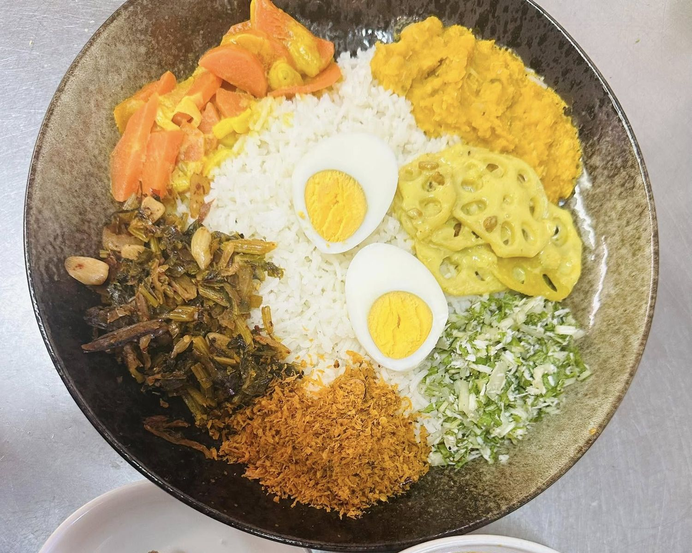
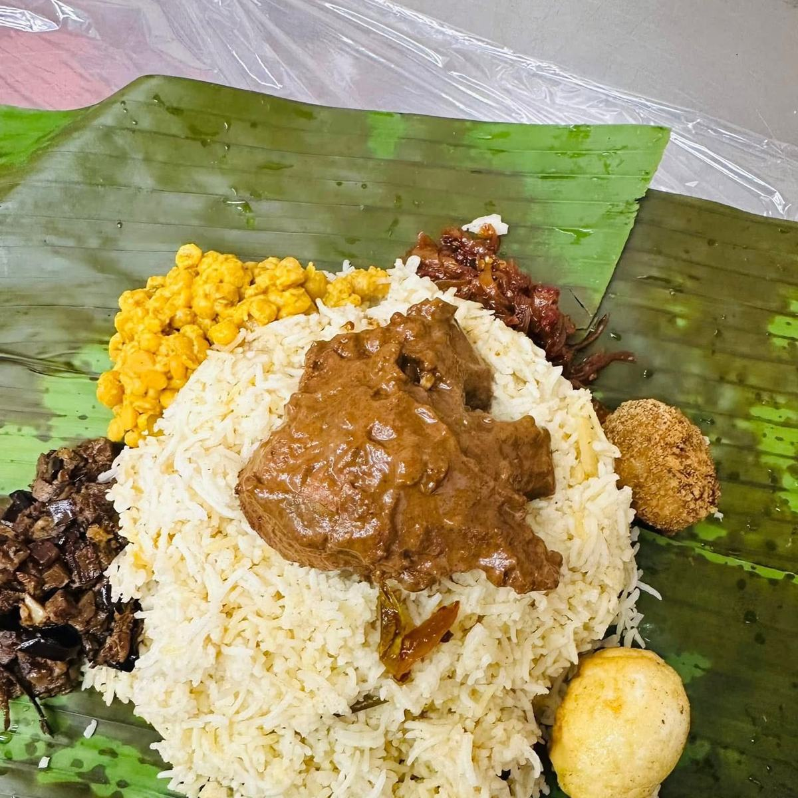
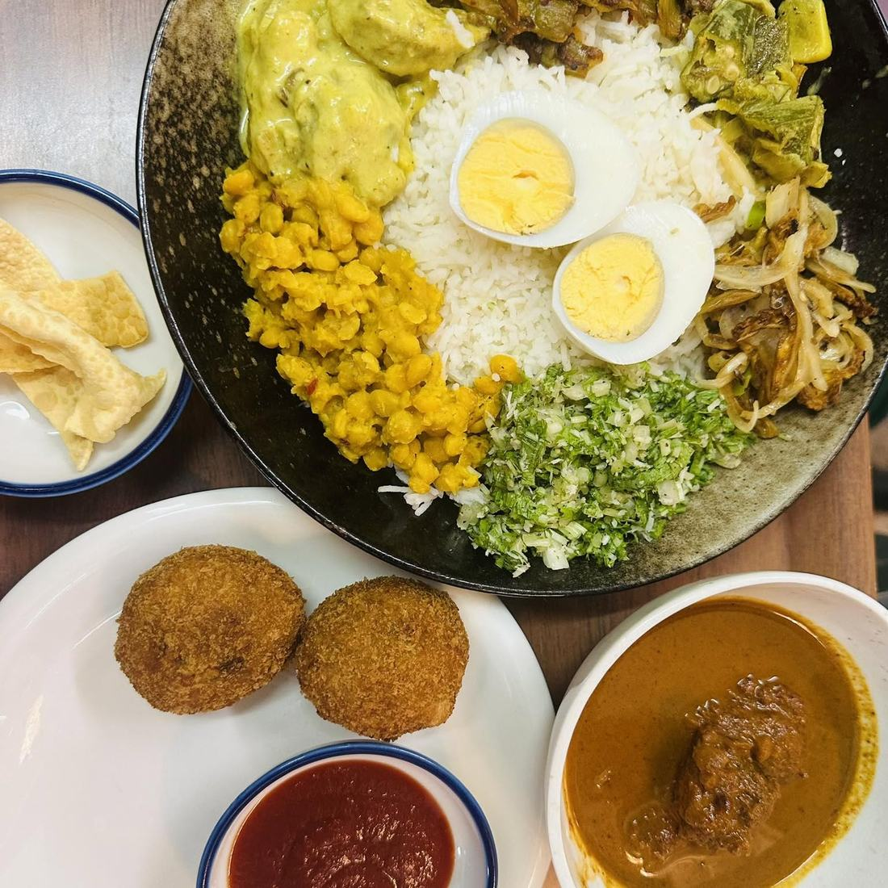
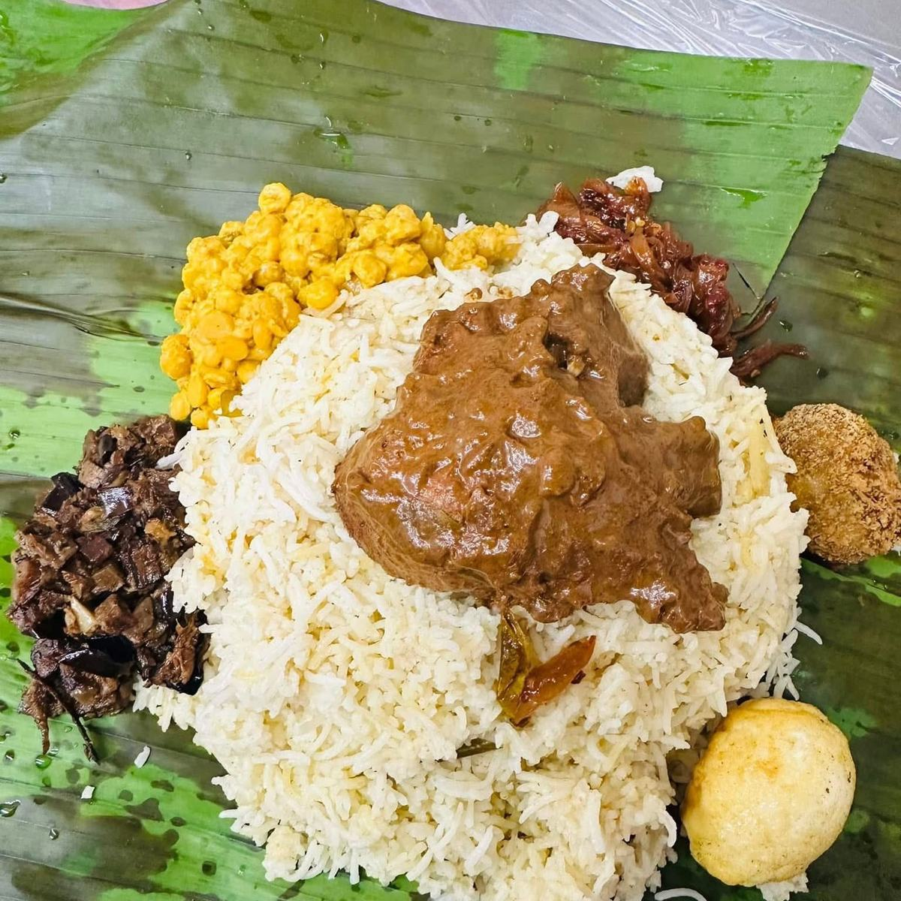
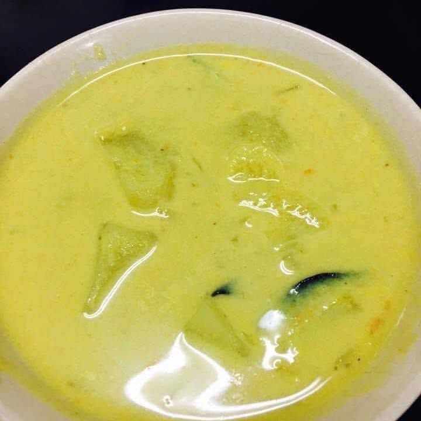
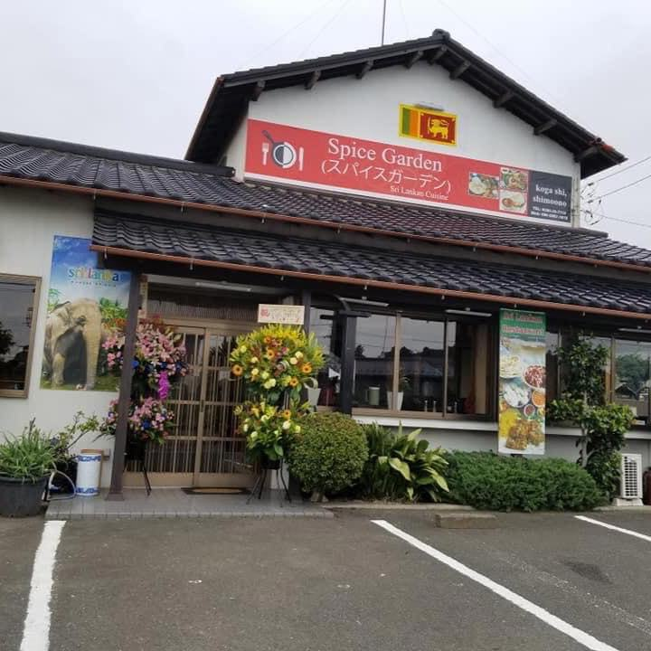
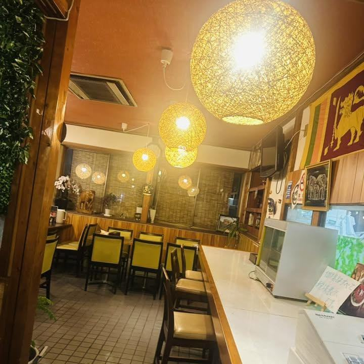
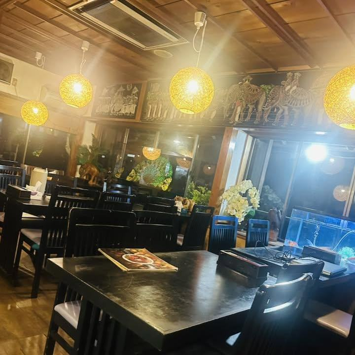
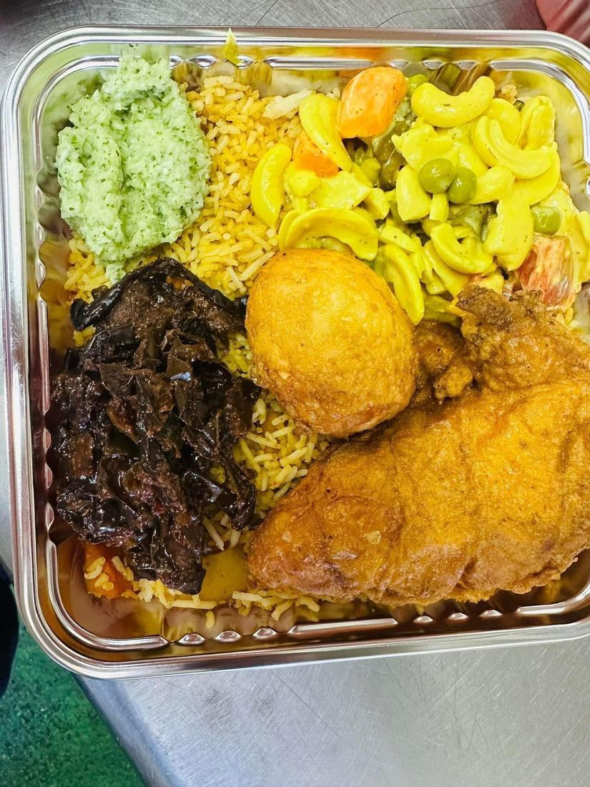

ライスのまわりに、
カレーと和えものをいくつか。
スリランカのふだんの食事を、そのままの並べ方で一皿にしてお出ししております。辛さはお好みに合わせてお作りいたします。
月曜定休昼 11:30〜14:30夜 17:30〜22:00 駐車場20台以上お支払いは現金のみ

ライスのまわりに、カレーと和えものをいくつか並べる。これがスリランカのふだんの食事です。当店では、その並べ方のまま一皿にしてお出ししております。
スパイスと、ココナッツ。辛さのほかに、香りと甘みを重ねてまいります。辛さはお好みに合わせてお作りいたしますので、ご注文のときにお申しつけください。
このあたりでスリランカ料理をお出ししているお店は、まだ多くございません。古河でお店を始めて、十年あまりになります。ご家族でも、お一人でも、どうぞお気軽にお越しください。

一皿の上で、味を少しずつ変えながら召し上がっていただけます。

ライスの端に、カレーと和えものを少しずつ寄せます。はじめから全部を混ぜてしまわないのがこつです。

スプーンで、寄せたぶんだけを混ぜ合わせます。次のひと口は、また別の組み合わせで。

控えめにも、しっかりとも、お作りいたします。ご注文のときにお申しつけください。
テーブルとカウンターで42席ございます。20名様から50名様までの貸切も承ります。お車は店の前と隣に20台以上お停めいただけます。
お持ち帰りも承ります。ご注文とお受け取りのお時間、お子さまとご一緒のお席のご相談、お値段のことも、お電話でお答えいたします。




季節のお野菜、魚、鶏肉、スパイスと塩味のバランスが絶妙！本場のスリランカ料理が堪能できます。
お客様の声より
激辛のカレーセットをいただきましたが、しっかりした美味しさと辛さがうまくマッチしていました。
お客様の声より
ボリュームがすごい。お腹空いてましたがギリギリで完食できました。美味しかったです！
お客様の声より
| 住所 | 〒306-0204 茨城県古河市下大野1679-1 |
|---|---|
| 電話 | 0280-23-2533 |
| 営業時間 | 昼 11:30〜14:30／夜 17:30〜22:00（L.O. 21:30） |
| 定休日 | 月曜日（ほかにお休みをいただく日がございます） |
| 席数 | 42席（8名様掛け3卓・6名様掛け1卓・4名様掛け2卓・カウンター4席） |
| 駐車場 | 店の前と隣に20台以上 |
| お支払い | 現金でのお支払いをお願いしております |
| ご宴会 | 20名様から50名様まで貸切を承ります |
| そのほか | 全席禁煙／お持ち帰り承ります／Wi-Fiがございます |